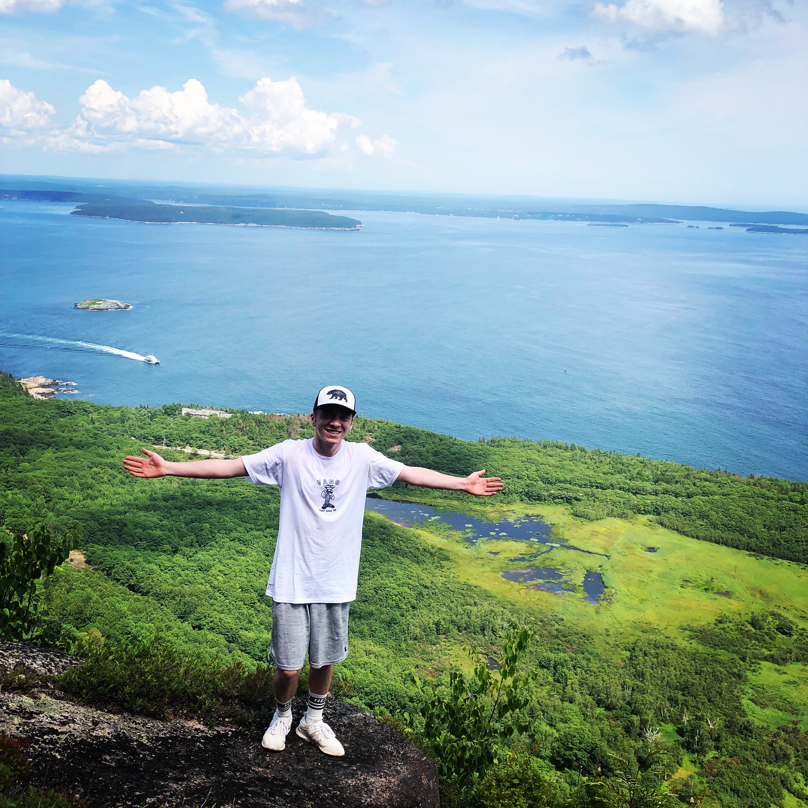

Whenever I am not working or in class, I will be finding ways to be fit. During the week I will get some games of basketball in before work. On the weekends I will go on runs early in the morning. This summer, I worked full time and then on the weekends I would never want to stay home and relax. I always made an effort to travel some place I have never been or done before. That was from jumping off of waterfalls to hiking Precipice Trail in Bar Harbor.
My father, my uncles and all of my cousins have all graduated from UMaine. I am majoring in Business Manegment. This is because I grew up with my family owning A convienance business that as I grew up, they have almost doubled the amount of stores they had when I was born. 5 years ago my mother wanted to venture out into the business field so she started up her own organic grocery store business In Brewer Maine.
I stray away from watching television because of all of the advertisements so instead I will often watch youtube channels. Here is a link to my favorite channel/video.
PAGE 1 PAGE 3